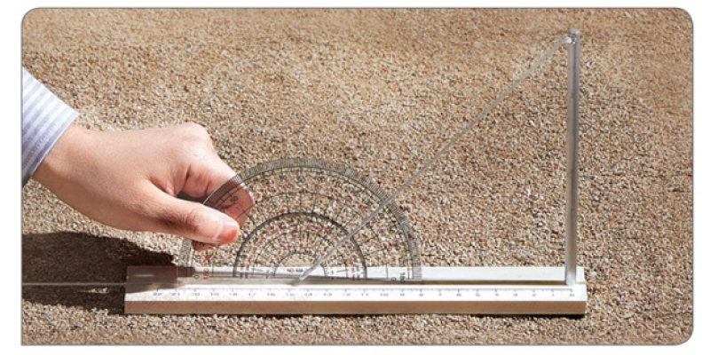

1번
태양 고도 측정기로 그림자 길이, 태양의 고도를 측정하는 순서로 알맞은 것은?

ㄱ
그림자와 실이 이루는 각을 측정한다.
ㄴ
햇빛이 잘 드는 편평한 곳에 태양 고도 측정기를 놓는다.
ㄷ
각도기 구멍에 실을 끼운 뒤 각도기의 중심을 막대기 그림자 끝에 맞춘다.
ㄹ
막대기 그림자가 태양 고도 측정기의 눈금과 평행하도록 조정한 뒤 막대기 그림자 길이를 측정한다.